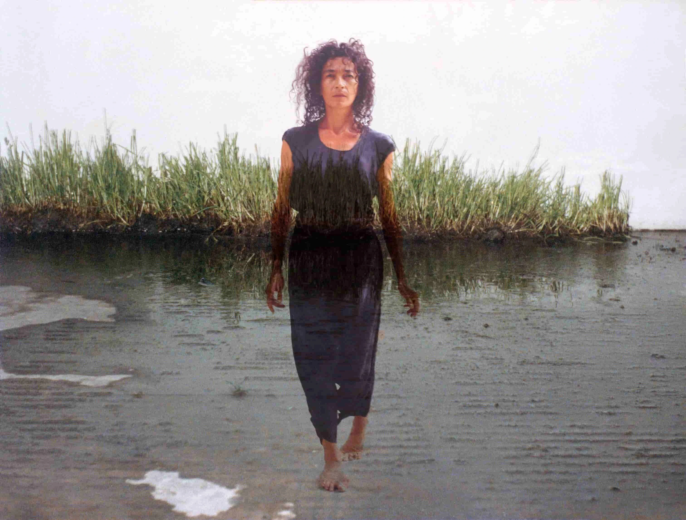
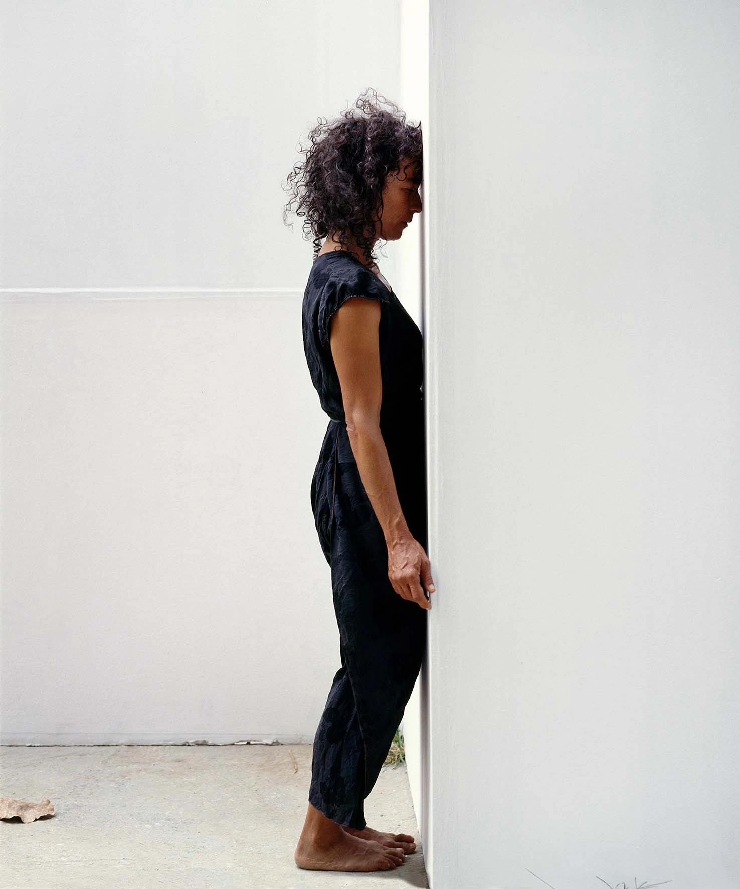
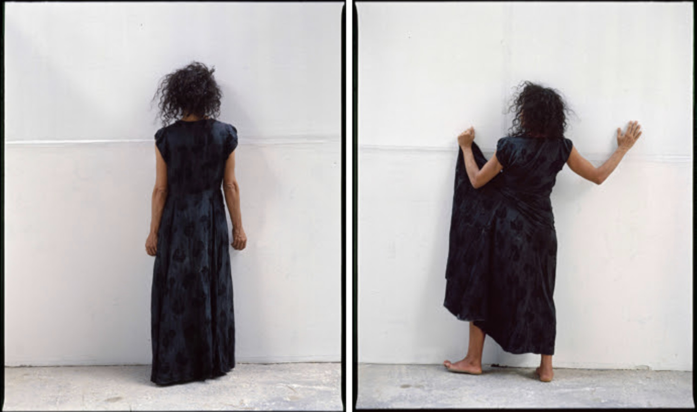

1996 · María Teresa Hincapié
Divina Proporción representa una evolución dentro de la obra de María Teresa Hincapié: el paso de lo doméstico hacia una conexión espiritual con el cosmos, la geometría y la naturaleza.
El título hace referencia a la proporción áurea, presente en la naturaleza, el arte y la arquitectura. Hincapié proponía que el cuerpo humano también está regido por estas leyes de armonía universal.

La artista caminaba lentamente sobre tierra o césped, colocando elementos naturales en patrones geométricos. La obra representaba el arte como una forma de siembra, paciencia y cuidado.
También proponía que el orden natural es, en sí mismo, una arquitectura viva.

Cada movimiento era extremadamente preciso y lento. Hincapié criticaba la velocidad de la vida moderna, defendiendo la pausa y la observación profunda como formas de resistencia.
Al trazar geometrías sobre el suelo, convertía cualquier lugar en un templo efímero. El espacio se transformaba mediante la intención, el respeto por la materia y la repetición ritual.

La obra estaba hecha de tierra, pasto y movimiento. Hincapié representaba que la belleza más profunda es temporal y que el valor del arte reside en la experiencia del momento vivido.